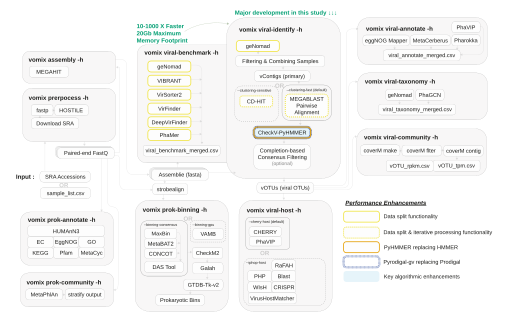

vomix-snakemake¶

vomix-snakemake is the back-end pipline of the command-line tool vOMIX-MEGA: a reproducible, scalable, and fast viral metagenomic pipeline for analyzing large-scale bulk-metagenomic and viromic data. We have engineered multiple bottlenecks in current state-ofthe-art software to allow rapid and well-benchmarked viral metagenomic analysis. Here are some of vomix-snakemake’s handy features:
High Speed
vomix-snakemake operates 10-1000 times faster than current pipelines that have unoptimized underlying software dependencies.
Stable Memory Footprint
vOMIX-MEGA’s standard viral end-to-end analysis takes a maximum memory of 24 Gb due to selection and fine-tuning of tools.
Modular & Configurable Analysis
Each module can be separately used with a variety of different inputs, and each software can be configured and fine-tuned for your needs.
Extensively Benchmarked
We’ve benchmarked our viral identification on experimental as well as mock-data and use the best performing tools.
Reproducible & Dockerized
All analysis is logged via a snakemake back-end, which is configured with Docker to allow full reproducibility.
Easy SRA Input
Simply feed vOMIX-MEGA a list your SRA accession codes and it will download, process, and analyse the viral community of your samples automatically.
Getting Started¶
To start using vomix-snakemake, read the installation and quickstart guides below. In case you want to dive deeper into each module and the outputs it produces, visit the pages listed in the sidebar.
Instructions on how to install vomix-snakemake on your computer or server.
Learn how to run vomix-snakemake on a sample dataset.
Citing vOMIX-MEGA¶
If you use vOMIX-MEGA in your work, please consider citing its pre-print manuscript:
vOMIX-MEGA: A critical speed enhancement for end-to-end viral metagenomics
Erfan Shekarriz, Elsa VIJENDRAN, Joshua WK Ho — bioRxiv (2026), DOI: XXXXXXXXXXXXXXXXXXX.
Report a bug to us¶
Have any questions or you’ve found a bug during your analysis? Please don’t hesitate to report it to us by making an issue on our GitHub repository.